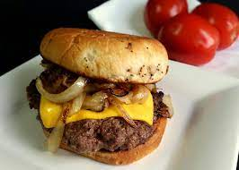

Pan Fried Onion Cheeseburger

Description
I make these burgers with caramelized onions and sharp Cheddar cheese. I serve them on brioche buns and eat them
plain.
Ingredrients
- 1 pound ground beef (80 percent lean)
- 1 tablespoon Worcestershire sauce
- salt and ground black pepper to taste
- 2 tablespoons salted butter
- 1 large onion, thinly sliced
- 3 slices sharp Cheddar cheese
- 3 rolls brioche, split and toasted
Steps to Make
- Place ground beef in a bowl and season with Worcestershire sauce, salt, and pepper. Mix thoroughly and shape
into 3 balls. Set aside.
- Melt butter in a large skillet. Add onion and cook until onions start to brown, 5 to 7 minutes. Remove from
the skillet. Add 3 ground beef balls to the same skillet and flatten with a cast iron press or a heavy
spatula. Evenly top each patty with onions and cook for 3 to 4 minutes more.
- Carefully flip patties over so that the onions are now on the bottom, pressing once again with cast iron
press or heavy spatula. Top each with a slice of cheese and cook until cheese is melted and burgers have
reached the desired doneness, 3 to 4 minutes. Serve on brioche buns.
Back to The Main Page